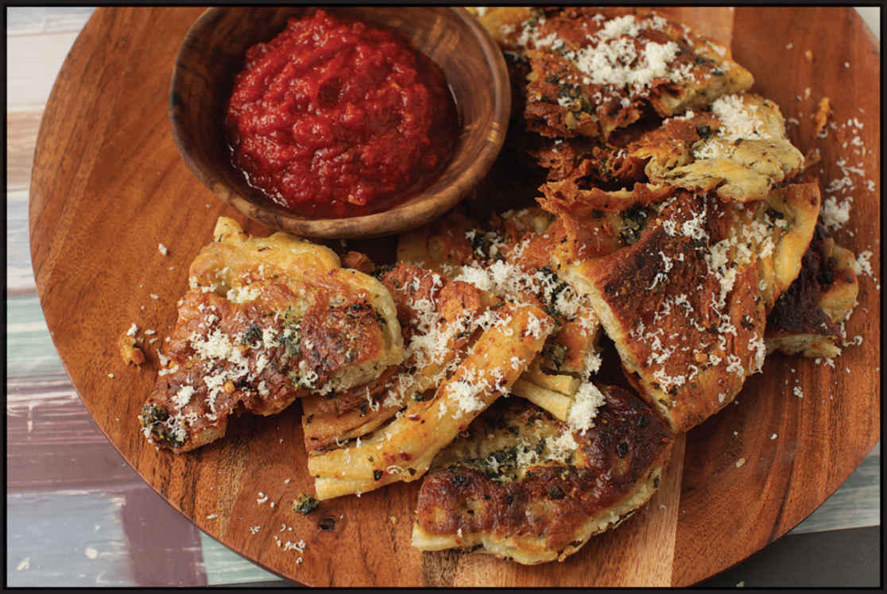

PANFRIED “GARLIC KNOT” PANCAKES
|
Yield Serves 4 |
Active Time 30 minutes Total Time 2½ hours |
INGREDIENTS
12 ounces (340 g) homemade or store-bought pizza dough
For the Filling:
2 tablespoons (30 g) unsalted butter
2 tablespoons (30 ml) extra virgin olive oil
6 medium garlic cloves (15 to 20 g), smashed and roughly chopped
Pinch of kosher salt
½ ounce (15 g) fresh parsley, basil, or cilantro leaves, minced (about ⅓ cup)
Vegetable or olive oil Grated Parmesan cheese
Marinara sauce (or ranch dressing, if you insist*) for dipping
When I was growing up in New York, at least twice a week my lunch or dinner consisted of a slice of pizza and a couple of garlic knots. I picked my pizzeria based on those knots. The best were at Pizza Town II, a long-gone pizzeria on Broadway that always had a metal bowl full of plump knots, glistening in garlicky butter and dusted with Parmesan cheese, in the pizza display case, right underneath the autographed Paul McCartney Wings Over America tour poster. At $1.50 for a plain slice, adding three garlic knots for 50¢ was a no-brainer.
Those garlic knots are a great way for pizzerias to get extra mileage out of leftover pizza dough. One afternoon, I found myself in a similar situation, with a few extra ounces of pizza dough leftover in the fridge from the previous day’s pizza party. Not wanting to fire up the oven, I wondered if I’d be able to panfry the pizza dough instead. It occurred to me that garlic knots, made by brushing pizza dough with fat and then reshaping them, are not that fundamentally different from Chinese scallion pancakes.
This led me to the idea of brushing pizza dough with garlic butter, shaping it into a flat, twisted flatbread (just like scallion pancakes), then panfrying it. The results were even better than I expected, with the fluffy, chewy pull of pizza dough, the crisp golden brown texture of panfried pancakes, and plenty of buttery, garlic- and Parmesan-scented layers.
There are a couple things to look out for. First is to make sure the pancakes have ample time to rest and rise before being fried to ensure the pancakes come out puffy and light. Second is that the pancakes have a tendency to puff up and lose contact with the wok as they fry. Careful flipping and popping the largest bubbles can mitigate this issue.
DIRECTIONS
1 Divide the pizza dough in half and roll each into a smooth ball. Place on a countertop and cover each ball with a layer of plastic wrap followed by an overturned bowl. Let rest for 1 hour.
2 Meanwhile, Make the Filling: Heat the butter and olive oil in a wok over medium heat until the butter melts and the foaming subsides. Add the garlic, season with the salt, and cook, stirring, until fragrant, about 1 minute. Add the parsley and stir to combine. Transfer to a bowl to cool.
3 Working with one dough ball at a time, roll out the dough on a lightly oiled countertop into a circle about 8 inches in diameter. Using a spoon, spread one-quarter of the garlic/Parmesan mixture over the top of the disk. Roll disk up like a jelly roll, then twist the roll into a tight spiral, tucking the end underneath. Flatten gently with your hand, then reroll into an 8-inch disk. Repeat with the second dough ball. Cover the disks with plastic wrap and let rise at room temperature until roughly doubled in volume, about 1 hour longer.
4 When ready to cook, heat ¼ cup (60 ml) oil in a flat-bottomed wok or a 10-inch carbon steel, cast iron, or nonstick skillet over medium-high heat until shimmering and carefully slip pancake into the hot oil. Cook, shaking the pan gently until the first side is an even golden brown, about 3 minutes, using tongs or a small spatula to release air trapped underneath and pressing down any bubbles that may form (you may need to make a tear in the pancake to let air escape from underneath if it is puffing excessively). Carefully flip with a spatula or tongs (be careful not to splash the oil) and continue to cook, shaking the pan gently, until the second side is an even golden brown, about 3 minutes longer. Transfer to a paper-towel-lined plate to drain. Repeat with the second pancake.
5 Brush the cooked pancakes with the remaining garlic mixture and dust with Parmesan. Cut into wedges and serve immediately with marinara sauce for dipping.

*You heathen.